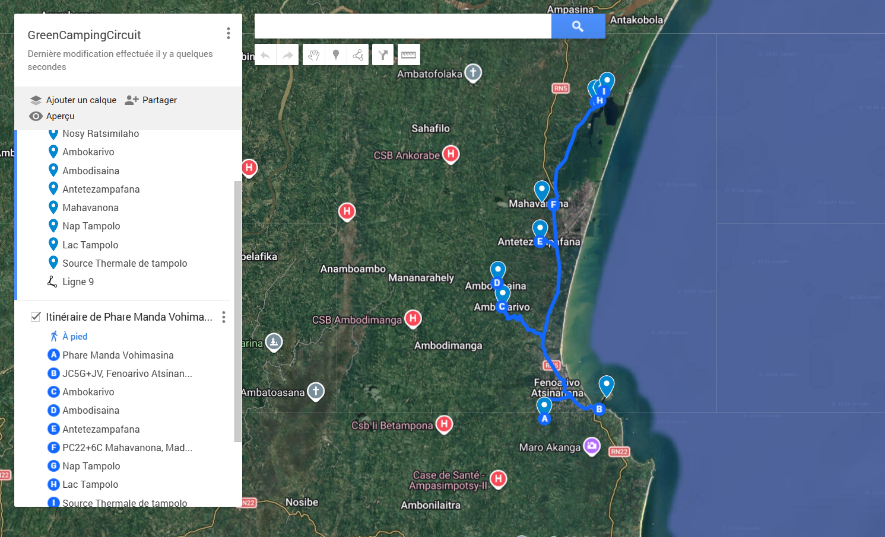
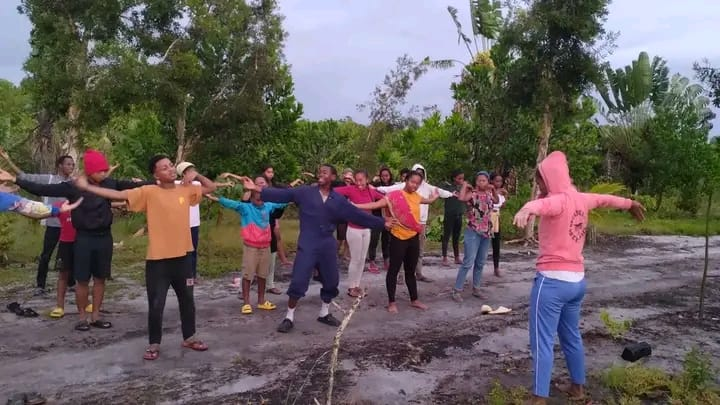

Une immersion totale entre terre, eau et culture Betsimisaraka sur le lac Tampolo.

Jour 1 : L'Immersion
Randonnée guidée à travers la forêt tropicale de Fénérive-Est, jeux éducatifs et installation dans nos tentes écoresponsables. La soirée s'illumine autour d'un feu de camp avec contes et danses traditionnelles Betsimisaraka.
✓ Randonnée guidée de 12 km
✓ Installation en camping écoresponsable
✓ Veillée culturelle Betsimisaraka
✓ Repas bio préparés sur place

Jour 2 : L'Action
Descente majestueuse en pirogue traditionnelle sur le lac Tampolo, suivie de notre programme participatif de reboisement pour laisser une empreinte positive sur le territoire de Fénérive-Est.